Operating Documentation
Direction 5193574-800, Rev# 22
LightSpeed 7.X Service Methods
Module Version 3.0, Version Date 7/24/13
Operating Documentation |
This module contains the following information:
Section 1 - Overview
Section 2 - Definitions within Scan Analysis
Section 3 - Starting Scan Analysis
Section 4 - Selections in Scan Analysis
Section 5 - dd File List Select Overview
Section 6 - Z-Axis Tracking
Section 7 - Tube Spit Data Correlation Example
Section 8 - Typical Examples of CAL Plots with Scan Analysis
Section 9 - Examples of Aux channel plots
The scan analysis feature allows users to have interactive access to scan files collected on the scanner. Scan data to be viewed can come from either patient scanning or from service mode tools such as Diagnostic Data Collection or Calibration.
Analysis is divided into the major areas of: SCAN ANALYSIS, Z-Tracking and dd FILE ANALYSIS. Each major section provides a file list select interface similar to the Image Works List Select, Image Browser. Analysis List Select allows you to select the appropriate file of interest.
Any of the normal scan files may be selected for processing within Scan Analysis including Axial, Helical, and Scout scans. Once the scan data of interest is selected you can select one of several processing options, which include: Update, Scan Header, Cal Vectors, Aux Channels, Create MSD dd File, Plot MSD, Plot VVC, and Save Scan.
| NOTE: | Screen shots shown in this guide may be green or light blue in color. Older software used green colored displays. Screen shots in this guide for are reference purposes. Color does not impact functionality. |
dd File (Diagnostic Data File): dd files are a result file from some type of operation on the scan data file. dd files are typically some form of view summed file that may have had some specific type of processing applied to it. For example, the processing applied to the raw data to calculate the position of the pin in ISO alignment results in a temporary file that is a view summed result that could be saved as a dd file. As long as two dd files have the same number of data elements in them, the two files may be added, subtracted, multiplied, or divided with each other.
Detector Macro Row: One detector output row for each of the acquisition mode combinations for the detector. For most of the analysis functions, this provides either four selections for the detector row to be examined, or four sets of data results that correspond to the detector rows 2A, 1A, 1B, 2B. Refer to VCT Detector Theory for further information.
Means and Standard Deviation File (MSD): This is usually the result of combining two or more views mathematically, which results in mean values for each channel in the views and an associated standard deviation for each channel in the views. In essence all of the user selected views in a scan file are summed together, resulting in a single “master view” that contains the averaged data from all of the views. The mean values represent the average data value from the channels, and the standard deviation values represent the amount of variability for that channel’s data values across all of the views. The higher the standard deviation, the more the channel output varied from view to view.
Scan Header: This is the information contained within the scan file that identifies the specific settings in effect when that scan file was created. The scan header includes information at several levels, including: Exam, Series, and Scan. Information identifying the technique selections, scan time, acquisition mode, and many others may be found in the scan header.
Cal Vectors: Within scan analysis, the cal vectors are only those vectors contained within the scan data file at the time that the scan was taken.
Aux Channels: The auxiliary channels are data sampling “channels” in the DAS that provide a way to place other data into the view besides the patient information coming from the detector. These include: Power Supply, Temperature, kV, mA, and other analog data values. These analog signals are sampled at the same rate as the patient image data and are a snapshot of those values at each view sample time.
Z-Axis Channels: These are some special purpose channels built into the detector that are used for several different special operations related to determining the x-ray beam position on the detector.
VVC (Views vs. Channels): This is a way to graphically represent the data values from each channel for each view of data from the DAS as a shade of grey. The display has the views stacked vertically and the channels arranged across the display horizontally.
Scan Analysis is started from the Common Service Desktop [IMAGE QUALITY] tab.
Illustration 1: Example Initial Scan Analysis Screen
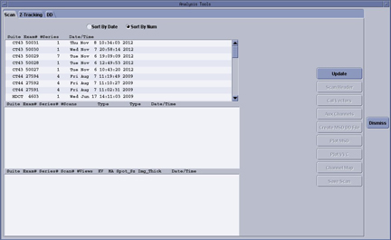
Upon starting the Scan List Select window, you can highlight an EXAM → SERIES → SCAN, and perform the desired analysis feature by pressing any of the following buttons:
| NOTE: | When selecting data analysis options, pop up selection boxes will appear allowing certain processing options that can be used. There are two different button styles depending on the software revision. Software released prior to 2007 has a selection button that shows as pushed in, where software as of 2007 shows a check mark in the button for the options selected. |
The [UPDATE] selection will refresh the List Select display if new scan files have been created since the Scan Analysis Tool was started.
The [SCAN HEADER] selection will open a scrolling text window that contains the header text information contained in select scan file.
The [CAL VECTORS] selection will open a window allowing you to select the tab corresponding to the vector (or information) you wish to display.
The resultant plots are auto-scaled, and in some cases, the range of data displayed is automatically set. This is to provide a reasonable initial view of the data. Always check the scale on the left-hand side of the plot displays. Cursor reporting of data value and channel numbers is provided.
Table 1: Scan File Calibration Vector Selections
| SCAN FILE CAL VECTORS | ||
|---|---|---|
| Cal Header | B1 | BIS IBO1 |
| Acal | B2 | BIS IBO2 |
| Sin | B3 | Bad Channel Map |
| Cos | HIQ Misc | |
| NOTE: | For Calibration Vector plots, the
channel number displayed may not be the actual detector channel number.
Scan data plots don't have this issue. Use the steps below to define
the mapping of displayed channel number to actual channel number for
the calibration data plots.
|
This selection will open a window that allows you to select which of the auxiliary channels in the scan file you wish to look at, as well as the start and ending views to display. After the selections are made, [OK] will process the data requests and display the results.
The resultant plots auto-scale, and in some cases the range of data displayed is automatically set. This is to provide a reasonable initial view of the data. Always check the scale on the left-hand side of the plot displays. Cursor reporting of data value and view numbers is provided.
Table 2: Scan File Auxiliary Channel Selections
| SCAN FILE AUXILIARY CHANNELS | |
|---|---|
| MA | |
| KV | |
| Detector rail heater temperatures | Zones 2,3,5 for Left, Center, and Right |
| DCB Voltages | List of voltages shown varies depending on Detector type |
| DIFB board temperatures | Temperatures for all DIFB boards plotted |
| DIFB Power Supplies | List of voltages shown varies depending on Detector type |
| Detector Module temperatures | AD board voltages shown for A and B sides as applicable |
| Detector Module Voltages | List of voltages shown varies depending on Detector type |
This will calculate a view averaged “super view” for the selected views and store the results in a separate file on the systems disk. The display will report the path and filename of the file just created. Once created, dd File can be viewed or compared with other files to check for specific operating characteristics.
Provides a set of view summed means and standard deviation plots of a scan file. The plotter is started to display the means vectors and the standard deviation vectors, computed across the entire scan for each detector macro row. Four mean and standard deviation plot sets displaying the window.
After Plot MSD is started, a window will allow you to select:
Start View and EndView
Processing steps:
Offset Correction: This processing step removes the signal bias introduced by the acquisition electronics from the scan data. This operation is performed on a channel-by-channel basis for each view.
Reference Normalization: Makes use of unobstructed (not blocked by the patient) detector cells at the end of the detector to adjust for fluctuations in the x-ray beam and effects of aperture size and mA. In the case where the reference channels are blocked, the system uses an estimated value for the processing. The steps for reference normalizing the scan data involve:
Offset correction for the reference channels.
Dividing the offset corrected scan data by the averaged reference channels for each view.
A Cal: This processing step removes the gain variations of the individual detection cells, as calculated during FastCal.
Preliminary Bad Pixel Correction: This processing step performs an interpolation, using data from around the bad pixels marked by the system, in order to allow for the processing of those pixels in the reconstruction engine. Plotted data will show the interpolated data in place of the bad pixels in plots.
Convolved Data: This processing step mathematically filters the channel data to remove blurring effects that would occur when the views are back-projected. The effect is to “sharpen” each channel’s data value within the view. Without the convolution step, some of the x-ray attenuation data for a particular channel ends up in the channels on either side of that particular channel. Convolution puts that adjacent channel contribution back into the channel data that it should have been in to begin with.
Cursor reporting of data value and channel numbers is provided.
The [PLOT VVC] selection provides Views-vs-Channels display of a grey scale representation for the selected scan file. Each view of data (or summed, compressed view) is represented on the display as a horizontal line. Each pixel in the line represents the data value for a particular channel from the DAS.
After VVC is activated, a window will allow you to select:
Start View and End View
Start Channel and End Channel
Processing steps:
Offset Correction: This processing step removes from the scan data, the signal bias introduced by the acquisition electronics. This operation is performed on a channel-by-channel basis for each view.
Reference Normalization: Makes use of unobstructed (not blocked by the patient) detector cells at the end of the detector to adjust for fluctuations in the x-ray beam and effects of aperture size and mA. In the case where the reference channels are blocked, the system uses an estimated value for the processing. The steps for reference normalizing the scan data involve:
Offset correction for the reference channels.
Dividing the offset corrected scan data by the averaged reference channels for each view.
A Cal: This processing step removes the gain variations of the individual detection cells, as calculated during FastCal.
Preliminary Bad Pixel Correction: This processing step performs an interpolation, using data from around the bad pixels marked by the system, in order to allow for the processing of those pixels in the reconstruction engine. Plotted data will show the interpolated data in place of the bad pixels in plots.
Convolved Data: This processing step mathematically filters the channel data to remove blurring effects that would occur when the views are back-projected. The effect is to “sharpen” each channel’s data value within the view. Without the convolution step, some of the x-ray attenuation data for a particular channel ends up in the channels on either side of that particular channel. Convolution puts that adjacent channel contribution back into the channel data that it should have been in to begin with.
Once displayed, the window and level for the displayed data can be changed to better see variations in the data.
Cross hair cursor reporting is provided for: Data Value, DAS Channel, Detector Channel, and View number. The cursor is moved across the display using the mouse.
| NOTE: | When viewing VVC plots use the Detector value reported as the detector channel not the cursor X value. The cursor will not represent the detector channel when calibration preprocessing is selected. |
A selection box on the display allows selection of line cursors and box cursors, which allow the selection of a channel, view, or group of channels and views for plotting.
The line and box cursors can be moved around the screen to view specific areas of interest. When the mouse pointer cursor is moved over a line cursor the mouse cursor will change to a four pointer arrow. Pressing the left mouse button allows you to ’drag’ the cursor across the display.
For the box cursors, the box may be dragged using the left mouse button with the mouse cursor positioned over the box. The size and shape of the box can be changed by moving the mouse cursor over the Bottom or Right edges of the box. When over the Bottom or Right edges of the box you can press the left mouse button to drag the box edge up and down or left and right.
With the channel and view cursors, the plotted data represent all channels for a selected view or all views for a selected channel.
With the box cursors, the resulting plot is a view summed means and standard deviation plot for the selected views and channels.
This brings up a utility to enter a data channel 1-912 and row number to show the mapping of that channel through the DAS/Detector hardware.
| NOTE: | For the HDAS_SATURN_64 dastype (saturn detector), the ganged modules 1-8 and 49-57 will show duplicate mapping data due to only having one A/D board per module. The module and IFB mapping is correct. Refer to Illustration 2 for clarity. |
Illustration 2: Channel mapping data
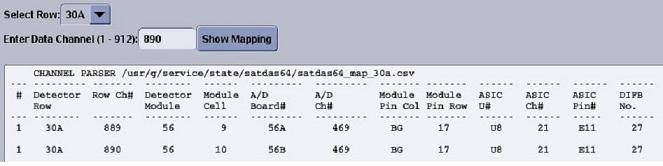
This will save the selected scan file to a temporary disk location so that it can moved to MOD or transferred via ftp to another location.
dd math is a means for the user to apply mathematical operations: add, subtract, multiply, and divide to dd files, and calculate the channel-to-channel difference or ratio of means vs. standard deviation vectors of a dd file. It allows the user to specify the scaling factor for the output vector, and provides three output modes: dd file, plot, and view numbers.
dd math is part of the dd analysis user interface. Scan Analysis is used to generate dd files that may then be manipulated or examined using dd File Analysis.
There are 18 different dd file types of six orientations. The orientations are View, Channel, RTS, CAL, Elements, and Header.
Channel oriented means and standard deviation type dd files are the only type that can be created from scan data files in the Scan Analysis application.
dd math consists of the following functions:
Add
Subtract
Multiply
Divide
Channel to Channel difference
Applies add, subtract, multiply, and divide between vectors in two dd files. The output file is a dd file with one of the following suffixes:
.add
.dif
.mul
.rat
Operations can be performed on dd files in View orientation, Channel orientation, RTS orientation, and Cal orientation.
Currently, no dd type restrictions are applied to operations between dd files, as long as the dd vectors have the same number of elements. If one file has a single vector and the other file has multiple vectors, the mathematical operation is applied multiple times using the single vector. Otherwise, the mathematical operation is applied component-wise for the number of vectors in each file.
Applies the following calculation to the data from the data set(s) in the dd files for View, RTS or Cal orientation:
(X2-X1), (X3-X2), (X4-X3),...,(Xn-Xn-1)
where X is the data value for each channel.
The output is channel to channel dd file with extension: .c2c
Three output modes are supported in dd math:
Plot - Will plot the output dd vector using an on-screen vector display.
dd File - Allows the user to specify the output dd file name with a full path or the file basename. If only base name is provided, the program will use the default prefix and suffix for the output file. The created dd file appears in the dd file list.
View Numbers - View Numbers will display the dd vector numerical values on the screen, and the user can perform numerical searches in the window.
The dd math operation panel and a set of the dd math operation buttons are part of the ddLS screen.
The ddLS supports the following functions for various file types.
Update
Plot
dd math operations: +, -, x, /, ch2ch
Sort By Date or Sort by Type
The user can perform these functions, except dd math operations, by simply selecting one or more files in the list select window, and clicking the function button. The following file types are supported in the ddLS user interface.
dd File
Cal File
Data File
dd Math Operations - Perform: add, subtract, multiply, divide, and channel to channel difference operations on dd files. These operations are only available for dd file types.
Plot - Plots the vector(s) of the selected files in the display window for the following file types: dd Files and Cal Files
View # - Prints the numerical data of the dd vector(s) to the display window(s). For image file types and scan file types, it displays the VVC plots of the selected files.
Update - Refreshes the display in the ddLS user interface.
The dd math operation buttons become insensitive if no files are selected in the dd math operation panel.
The user may start dd math operation(s) by selecting the file(s) and putting them into the selection field by clicking the button FILE #1 or FILE #2. If the selected file is not a dd file, the application will not put it into the dd math operation field. A message window will pop up and ask user to select a dd file.
If only one file is selected and it is of the file type RTS dd file or MSD dd file, both [CHANNEL TO CHANNEL] becomes sensitive. If the selected file is not of the type MSD or RTS, only [CHANNEL TO CHANNEL] become sensitive. When two dd files are selected, [ADD], [SUBTRACT], [MULTIPLY], and [DIVIDE] become sensitive and [CHANNEL TO CHANNEL] becomes insensitive.
The user can specify the output file name when the dd file output mode is set. Otherwise the system offers a default dd file name.
The default output scaling factor is 1.0. The user can set the scaling factor to any real number.
When the dd math operation buttons are sensitive, the user can select the desired button to start the dd math operation.
The [Z-AXIS TRACKING] tool can be used to plot various tracking functions, using a Scan Data Set. For a scan data set, the analysis package can plot different data versus views in [UN-FILTERED ](the default) or [FILTERED] (20 pt. Boxcar) formats. Numerical information (“Max”, “Min”, “Mean”, and “Std. Dev.”) is also provided. In some plots, the numerical information provided can be used for further analysis by comparing it to a “specification” value, as an indication of a pass/fail condition. Whereas other plots are more general, and in some cases may be useful, they are typically only used for troubleshooting.
Illustration 3: Example Top Level Tracking Menu
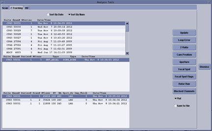
In the figures that follow, examples of “known” tracking plots are shown. Since plots vary from system to system, the examples shown should be used only as guides. Compare your system’s plots and analyze them relative to the specification shown in each figure. The plots shown are [UN-FILTERED] views, which is the default option when they are plotted. A 20 point boxcar filter takes the 20 view average and then plots the data.
Illustration 4: Single Scan Pop-Up Menu
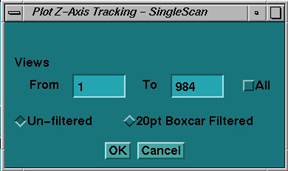
A value is not considered to be out of specification unless the limit is exceeded for a sustained interval of 100 views or more. In the cases where specifications are not given, consider plots informational only.
A [LOOP ERROR] is the difference between the calculated position of the beam minus the desired target’s position (operating point) obtained during Collimator Calibration.
Illustration 5: Loop Error Plot
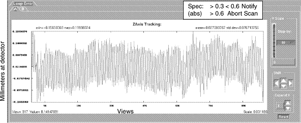
A [LOOP ERROR MBP] (Mean Beam Position) plot is the same as the loop error plot, except that the display represents the loop error relative to the mean beam position during FASTCAL. The FASTCAL beam position is stored in the calibration database.
Illustration 6: Loop Error (MBP) Plot
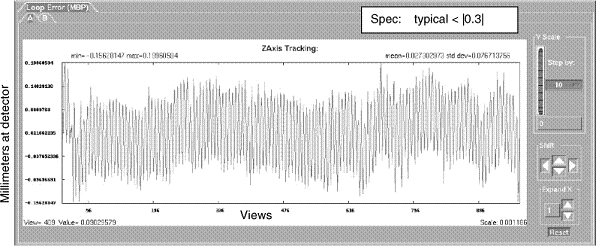
[Z-RATIO ]Plot computes the ratio of outer row Z-channels (Channels 763, 764, & 765 averaged) to inner row Z-channels. This is done for both the “A” and “B” sides.
Illustration 7: Z Ratio Plot
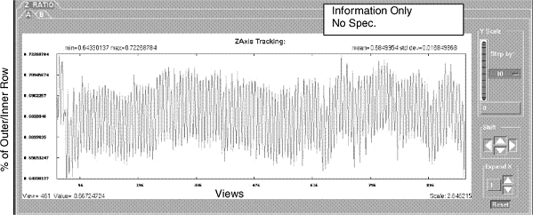
The [CAM POSITION] plot shows the CAM position during a scan from collimator opening (center-line). The absolute value of [A] side plus [B] side is the total aperture size at the collimator. Cam positions are stored in the scan file.
Illustration 8: CAM Position Plot
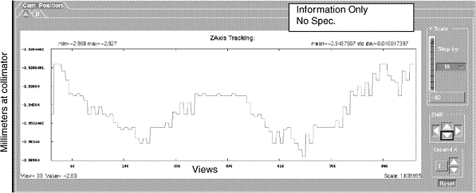
[APERTURE] plot indicates the width of the Collimator Cam aperture in millimeters. Due to the distance magnification factor, the width at the collimator is smaller than prescribed acquisition mode, or width of the beam at the detector window.
Illustration 9: Aperture Plot
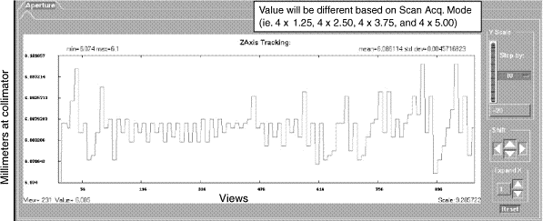
[FOCAL SPOT POSITION] plot shows the calculated focal spot position from the centerline of either the [A] or [B] side. The vertical scale (in millimeter) represents that portion of the focal spot length. The absolute value of the [A] side plus the [B] side should equal the focal spot length (Small Spot = 0.7mm, Large Spot = 1.2mm).
Illustration 10: Focal Spot Position (A/B) Plot
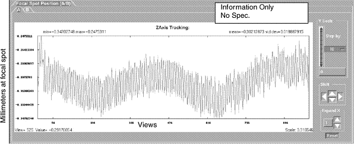
[FOCAL SPOT LENGTH] plot shows the calculated focal spot length. The length may change slightly due to mA, rotor wobble or gantry rotation wobble. Length is also based on the calculations, which use values from the Z-channels. Typically the small spot size is 0.7mm, and the large spot size is 1.2mm.
Illustration 11: Focal Spot Length Plot
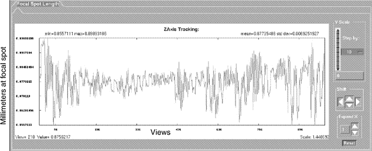
[FOCAL SPOT POSITION] plot indicates the calculated focal spot position relative to the centerline, with the center position being 0. The focal spot moves during a scan due to mA, rotor wobble, gantry rotation wobble, and because of tube (target) heat.
Illustration 12: Focal Spot Position Plot
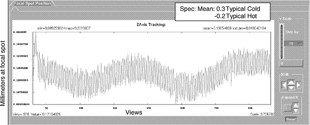
[CAM RINGING] provides a plot of high frequency variations, such as variations that are 180 degrees out of phase, like typical CAM ringing. A specification is not available, but typical values are less than 0.1 counts.
Illustration 13: CAM Ringing Plot
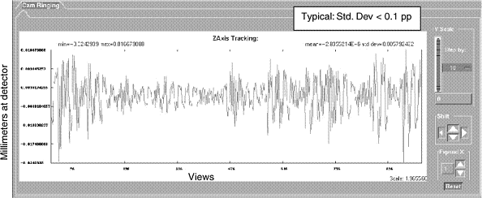
Figure 0-1[ROTOR RUN] provides a plot of high frequency variations that are IN phase, such as the small periodic movement of the anode at the rotor run frequency. Typical values are less than 0.1 count values.
Illustration 14: Rotor Run Plot
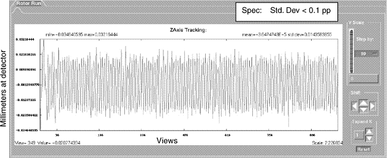
A [BLOCKED CHANNEL] indicates that the value for DAS Channel 762 falls below the 10% threshold. Indicating that the channel is blocked and tracking (CAM positions) remains constant at the last known good position. This plot indicates a normal unblocked scan. Unblocked condition is indicated by a numeric value of 0. Blocked view condition is indicated by a numeric value of 1.
Illustration 15: Blocked Channel Menu
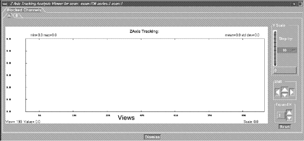
The [MULTI-SCAN SELECT] option allows the user to calculate and view multiple scans. Select the [MULTI-SCAN SELECT] button, and then select the exams, series, or multiple scans. Once scans are selected, then select the plot that you are interested in. Due to the time it may take, based on the number of scans selected, a pop-up window may appear, to indicate the number of scans selected and the approximate time to calculate. If the time is too long, or wrong scans are selected, hit [CANCEL]. Once the [OK] button is selected, you cannot cancel processing.
Illustration 16: Multi-Scan Select Menu
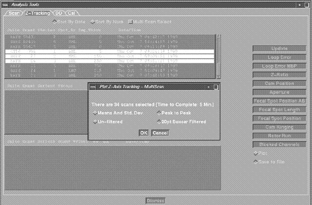
By using a combination of capabilities within Scan Analysis, some things just got easier.
In the past, tube spits as a source of image artifacts were frequently done by implication. The tube has been spitting lately, so the problem might be that.
With some of the new system and software capabilities, it is much easier to confirm some of these diagnosis. For example:
VVC data for scan (refer to Illustration 17). Dark horizontal lines are views with data values lower than the views immediately before and after.
Select Channel Cursor and Plot Now (refer to Illustration 18). Notice how the dip in the channel data corresponds to the views around 615. Next take a look at the kV and mA data.
Illustration 17: VVC Tube Spit Data Example
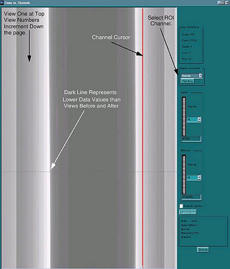
Illustration 18: All View for one channel KV Spit Data Example
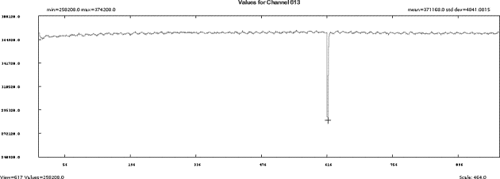
Once again the dip in the KV values reported in the view data corresponds to views around 615.
Illustration 19: - Tube Spit Auxiliary Channel data for kV
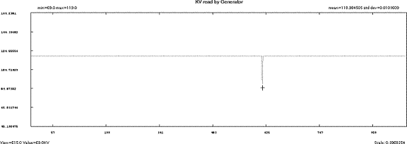
Illustration 20: - Tube Spit Auxiliary Channel data for mA
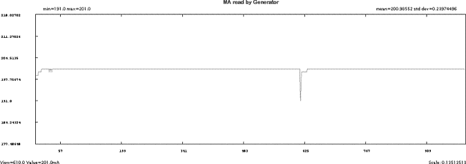
From the previous examples, it is easy to correlate the views with suspect data from the VVC Display with the view by view plots for kV, mA, and Channels. Specific information to look for on the examples:
The Min, Max, and average values for kV, mA, and channel data. This information provides a quick way to determine the scale of the information that you are viewing.
The cursor report information provides a continuous update, depending upon the type of data that is being displayed: data values, view number, channel number.
Refer to the NOTE inSection 4.3 regarding possible offset to cursor reporting of detector channel.
Illustration 21: Calibration Vector Acal / Head Filter
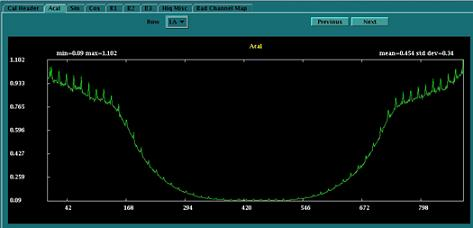
Illustration 22: Calibration Vector Sin / Head Filter
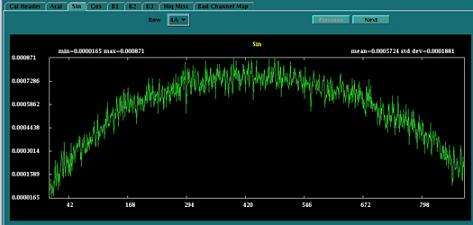
Illustration 23: Calibration Vector Cosine / Head Filter
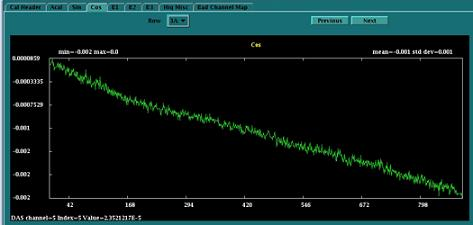
Illustration 24: Calibration Vector “B1” / Head Filter
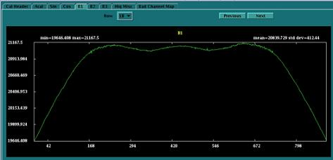
Illustration 25: Calibration Vector “B2” / Head Filter
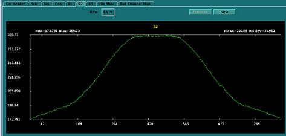
Illustration 26: Calibration Vector “B3” / Head Filter
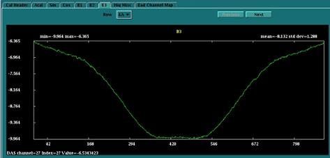
Illustration 27: BIS IBO1 (center module specific cal)
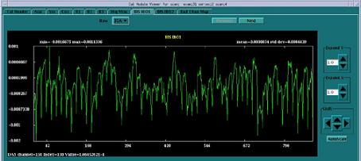
Illustration 28: BIS IBO2 (center module specific cal
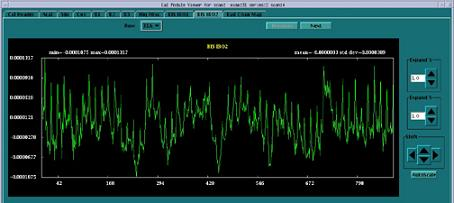
Scan analysis Aux Channel display will show plots for the following information that is contained in the scan footer of every scan. This data represents the state of the system during the scan.
mA
kV
Detector Rail Heater temperatures
DCB voltages
DIFB board temperatures
DIFB Power supplies (specific to the DIFB)
Detector Module Temperatures (FRDM’s)
Detector Module Voltages (Generated by the DIFB’s and sent to the Digital Modules)
All plots are autoscaled to show the maximum and minimum values of the current plot at the full range of the plot window. The mean and standard deviation along with the Y-scale must be considered to determine if there is any problem shown by the plot.
All the plots shown below are given as examples for each of the information categories available. Not all plots available are shown. These examples are just to give an idea of what you can see with some notes to help interpret the data.
The following mA and kV plots are taken from a 120kV, 40mA scan.
Illustration 29: mA plot (40 mA scan)
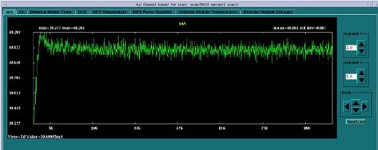
Illustration 30: kV plot (120 kV scan)
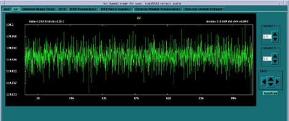
The detector heater temps are shown across all views as read by the rail thermistors. Zone 2 is the left zone, zone 3 is the center zone and zone 5 is the right zone.
Illustration 31: Detector Rail Heater Temperatures
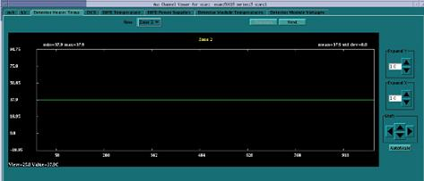
The DCB tab shows all the power supplies used by the DCB and it measures the 48V master supply that is used by the entire DAS/Detector to generate all the lower voltages.
The power supply plots may show various spikes, pay attention to the mean and standard deviation to determine if this is a concern or not. For this example the voltage plotted is 1.5V and the plot shows a voltage of 1.48 spiking up to 1.49 so there is no issue. Since this is read through an A/D converter, this may simply be varying between 2 counts on the A/D.
Illustration 32: DCB 1.5V Digital Power Supply
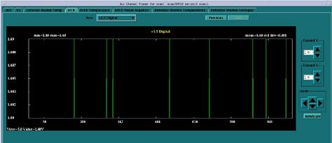
Illustration 33: DCB 3.3 Digital Power Supply
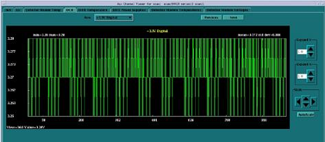
Illustration 34: DCB 48V Power Supply
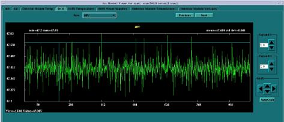
The ground or noise plots may or may not show a line at first. This occurs when the voltage is zero with no standard deviation. The plot line in this instance is typically right at the bottom of the plot window. If the Shift down arrow is selected, the line will come onto the screen. In this instance both the mean and standard deviation are zero so there is nothing to see anyway.
Illustration 35: DCB Analog Ground
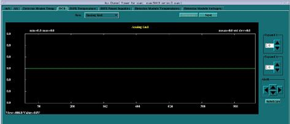
The P-variable supply is a 10V power supply.
Illustration 36: DCB P-Variable Power Supply
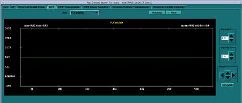
The DIFB temperatures are plotted across all views of the scan. The example below shows a step in the temperature but if the scale is reviewed, the change is only 0.06 degrees Celsius change.
Illustration 37: DIFB Board Temperatures
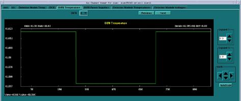
The DIFB power supply plots will show the same spikes as seen on the DCB power supplies. Same notes apply. Check the scale before deciding if the plot actually shows a problem.
Illustration 38: DIFB 1.5V Digital Power Supply
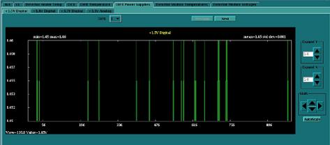
The detector module temperatures are plotted across modules (1-57) to show the temperature profile of the entire detector. The display also shows the two temperature sensors on each A/D board of a Digital Module (FRDM). The two plots should look the same as the sensors are both under the heat sink of the A/D board being shown. A large difference would indicate a likely sensor issue and is not a problem. The detector firmware is programmed to ignore one of the redundant sensors if a large difference is seen. The pull down menu allows the selection of the A or B side displays of the A/D boards in the detector.
64 slice systems have a B side board, 32 slice systems only have an A side.
The profile will change slightly depending on heat load at the time of the data collection.
Illustration 39: Detector Module Temperatures (FRDM's)
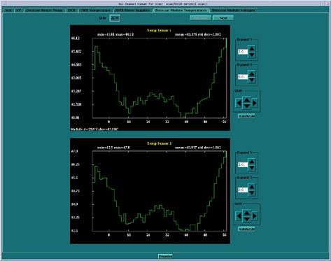
The DIFB’s supply power to the Digital Modules (FRDM's). The plots shown in this tab are the supplies used by the Digital Modules. These plots are displayed as the voltage across views. The pull down menu selects the Digital Module (both A and B sides) being displayed. In the example below DIFB 1 gives power to the A-side of Module 1 and DIFB 2 gives power to the B-side of Module 1.
For 64-slice systems, two plots are shown representing the A and B sides of a Digital Module. For 32-slice systems only the A-side plots are shown.
Illustration 40: Detector Module 2.5V Analog Power Supply
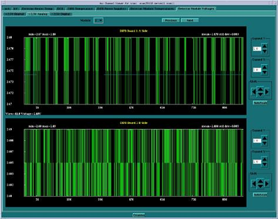